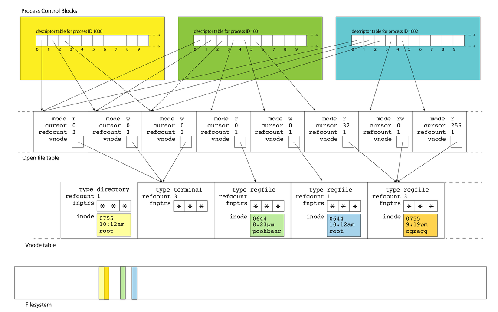
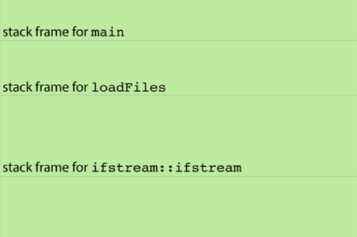
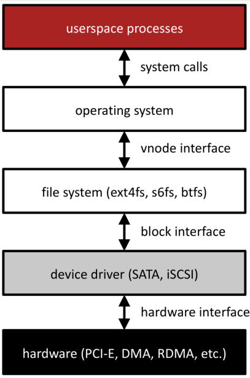

Filesystem System Call¶
User Perspective¶
Studying how we interact with the filesystem as users will inform how we interact with it as programmers.
As users, we can run
lsto get details about particular files. Using-ashows all files (even hidden ones),-lshows more info about each file.cs103@stickmind:~/assign1$ ls -al total 42 drwx------ 5 cs103 operator 2048 Jan 9 08:41 . drwxr-xr-x 51 cs103 operator 6144 Jan 9 15:12 .. drwx------ 8 cs103 operator 2048 Jan 9 15:12 .git -rw------- 1 cs103 operator 259 Jan 5 15:31 .gitignore -rw------- 1 cs103 operator 1750 Jan 9 15:12 imdb.cc -rw------- 1 cs103 operator 3501 Jan 5 15:31 imdb.h -rw------- 1 cs103 operator 6439 Jan 5 15:31 imdbtest.cc -rw------- 1 cs103 operator 1720 Jan 5 15:31 imdb-utils.h -rw------- 1 cs103 operator 964 Jan 5 15:31 Makefile drwx------ 2 cs103 operator 2048 Jan 5 15:31 .metadata -rw------- 1 cs103 operator 2146 Jan 5 15:31 path.cc -rw------- 1 cs103 operator 4122 Jan 5 15:31 path.h -rw------- 1 cs103 operator 1829 Jan 5 15:31 search.cc drwx------ 2 cs103 operator 2048 Jan 5 15:31 tools ① ② ③ ④ ⑤ ⑥ ⑦
Type and permissions
Hard Links
Owner name
Group name
Size (bytes)
Last modified time
Filename
.means current directory..meas parent directory
File Permissions¶
Here, the owner has read, write, and execute permissions, the group has only read and execute permissions, and the other user also has only read and execute permissions.
rwx r-x r-x | | | owner group other
Filesystem represents permissions in binary (1 or 0 for each permission option):
e.g. for permissions above:
111 101 101we can further convert each group of 3 into one base-8 digit
base 8: 7 5 5
so, the permissions for the file would be 755
Programmer Perspective¶
System Calls¶
Functions to interact with the operating system are part of a group of functions called system calls.
A system call is a public function provided by the operating system.
The operating system handles these tasks because they require special privileges that we do not have in our programs.
The operating system kernel actually runs the code for a system call, completely isolating the system-level interaction from your (potentially harmful) user program.
We are going to examine the system calls for interacting with files. When writing production code, you will often use higher-level methods that build on these (like C++ streams or
FILE *), but let’s see how they work!
A function that a program can call to open a file:
int open(const char *pathname, int flags);
pathname: the path to the file you wish to openflags: a bitwise OR of options specifying the behavior for opening the filethe return value is a file descriptor representing the opened file, or
-1on error
Many possible
flags(seemanpage for full list).You must include exactly one of the following flags. These say how you will use the file in this program:
O_RDONLY: read onlyO_WRONLY: write onlyO_RDWR: read and write
Optional:
O_TRUNC: if the file exists already, clear it (“truncate it”)O_EXCL: the file must be created from scratch, fail if already exists.
A function that a program can call to open (and potentially create) a file:
int open(const char *pathname, int flags, mode_t mode);
mode: the permissions to attempt to set for a created file, e.g. 0644 (octal!)
Optional:
O_CREAT: You can also create a new file if the specified file doesn’t exist, by including O_CREAT as one of the flags. You must also specify a third mode parameter.
Aside
How are there multiple signatures for open in C? See c - open() system call polymorphism - Stack Overflow.
A function that a program can call to close a file when done with it.
int close(int fd);
fd: the file descriptor you’d like to close.Returns: 0 on success, -1 on error (we usually won’t error-check close)
It’s important to close files when you are done with them to preserve system resources.
You can use
valgrindto check if you forgot to close any files. (–track-fds=yes)
A function that a program can call to attempt to read up to
countbytes from an open file referenced byfdinto the buffer starting atbuf.ssize_t read(int fd, void *buf, size_t count);
fd: the file descriptor for the file you’d like to read frombuf: the memory location where the read-in bytes should be putcount: the number of bytes you wish to readThe function returns
-1on error,0if at end of file, ornonzeroif bytes were read (will never return 0 but not be at end of file)
Key idea
readmay not read all the bytes you ask it to! This is not necessarily an error - e.g. if there aren’t that many bytes, or if interrupted. The return value tells you how many were actually read. If we must have all bytes, we can call read more.The operating system keeps track of where in a file a file descriptor is reading from. So the next time you read, it will resume where you left off.
A function that a program can call to write up to
countbytes from the buffer starting atbufto an open file referenced byfd.ssize_t write(int fd, const void *buf, size_t count);
fd: the file descriptor for the file you’d like to write tobuf: the memory location storing the bytes that should be writtencount: the number of bytes you wish to write frombufThe function returns
-1on error, or otherwise the number of bytes that were written (nonzero assuming count > 0)
Key idea
writemay not write all the bytes you ask it to! This is not necessarily an error - e.g. if not enough space, or if interrupted. The return value tells you how many were actually written. If we must write all bytes, we can call write more.The operating system keeps track of where in a file a file descriptor is writing to. So the next time you write, it will write to where you left off.
File descriptors¶
A file descriptor is like a “ticket number” representing your currently-open file.
It is a unique number assigned by the operating system to refer to that instance of that file in this program.
Each program has its own file descriptors.
When you wish to refer to the file (e.g. read from it, write to it) you must provide the file descriptor.
File descriptors are assigned in ascending order (next FD is lowest unused)
File descriptors are just integers - for that reason, we can store and access them just like integers.
If you’re interacting with many files, it may be helpful to have an array of file descriptors.
There are 3 special file descriptors provided by default to each program:
0: standard input (user input from the terminal) -
STDIN_FILENO1: standard output (output to the terminal) -
STDOUT_FILENO2: standard error (error output to the terminal) -
STDERR_FILENO
File descriptors are a powerful abstraction for working with files and other resources. They are used for files, networking and user input/output!
Operating System Data Structures¶
Thinking
What is a file descriptor really mapping to behind the scenes? How does the operating system manage open files?
All of these data structures are private to the operating system. They are layered on top of the filesystem data itself.

For each active process, Linux maintains a data structure called process control blocks - a set of relevant information about its execution (user who launched it, CPU state, etc.). These blocks live in the process table.
A process control block also stores a file descriptor table. This is a list of info about open files/resources for this process
A file descriptor (used by your program) is a small integer that’s an index into file descriptor table.
Descriptors 0, 1, and 2 are standard input, standard output, and standard error, but there are no predefined meanings for descriptors 3 and up. When you run a program from the terminal, descriptors 0, 1, and 2 are most often bound to the terminal.
A file descriptor is the identifier needed to interact with a resource (most often a file) via system calls (e.g.,
read,write, andclose)A name has semantic meaning, an address denotes a location; an identifier has no meaning
/etc/passwdvs.34.196.104.129vs.file descriptor 5
Many system calls allocate file descriptors
read: open a file
pipe: create two unidirectional byte streams (one read, one write) between processes
accept: accept a TCP connection request, returns descriptor to new socket
When allocating a new file descriptor, kernel chooses the smallest available number
These semantics are important! If you close
stdout (1)then open a file, it will be assigned to file descriptor 1 so act as stdout (this is how$ cat in.txt > out.txtworks)
An entry in the file descriptor table is really a pointer to an entry in another table, the open file table.
The open file table is one array of the file table entries, which is the information about open files across all processes.
Multiple file descriptor entries (even across processes!) can point to the same open file table entry.
An open file table entry stores changing info like “cursor” (how far into file are we?)
E.g., a file table entry (for a regular file) keeps track of a current position in the file
If you read 1000 bytes, the next read will be from 1000 bytes after the preceding one
If you write 380 bytes, the next write will start 380 bytes after the preceding one
This structure allows the OS to share resources across processes. If you want multiple processes to write to the same log file and have the results be intelligible, then you have all of them share a single file table entry: their calls to write will be serialized and occur in some linear order
Each process maintains its own descriptor table, but there is one, system-wide open file table. This allows for file resources to be shared between processes, as we’ve seen
As drawn above, descriptors 0, 1, and 2 in each of the three PCBs alias the same three open files. That’s why each of the referred table entries have refcounts of 3 instead of 1.
This shouldn’t surprise you. If your
bashshell callsmake, which itself callsg++, each of them inserts text into the same terminal window: those three files could be stdin, stdout, and stderr for a terminal
Each open file entry has a pointer to a
vnode, which is a structure housing static information about a file or file-like resource.The
vnodeis the kernel’s abstraction of an actual file: it includes information on what kind of file it is, how many file table entries reference it, and function pointers for performing operations.A
vnode’s interface is file-system independent, but its implementation is file-system specific; any file system (or file abstraction) can put state it needs to in thevnode(e.g., inode number)The term
vnodecomes from BSD UNIX; in Linux source it’s called ageneric inodevnodeslive in the vnode table; a single table referenced by all open file table entries.There is one system-wide
vnodetable for the same reason there is one system-wide open file table. Independent file sessions reading from the same file don’t need independent copies of thevnode. They can all alias the same one.These resources are all freed over time:
Free a file table entry when the last file descriptor closes it
Free a
vnodewhen the last file table entry is freedFree a file when its reference count is 0 and there is no
vnode
None of these kernel-resident data structures are visible to users. Note the filesystem itself is a completely different component, and that filesystem inodes of open files are loaded into
vnodetable entries. The yellow inode in thevnodeis an inmemory replica of the yellow sliver of memory in the filesystem.
How are System Calls Made?¶
Key idea: the OS performs private, privileged tasks that regular user programs cannot do, with data that user programs cannot access.
Problem: because of this, we can’t have system calls behave like regular function calls - there are security risks to having OS data in user-accessible memory!
Function Call Semantics¶

Refresher: for a normal function call, the stack grows downwards to add a new stack frame. Parameters are passed in registers like
%rdiand%rsi, and the return value (if any) is put in%rax.This means stack frames are adjacent, and can in theory be manipulated via pointer arithmetic when they’re not supposed to.
E.g.
loadFilescan poke around inmain’s stack frame, ormaincan poke around in the values left behind byloadFilesafter it finishes.Functions are supposed to be modular, but the function call and return protocol’s support for modularity and privacy is pretty soft.
Solution: a range of addresses will be reserved as “kernel space”; user programs cannot access this memory. Instead of using the user stack and memory space, system calls will use kernel space and execute in a “privileged mode”. But this means function calls must work differently!
System Call Semantics¶
New approach for calling functions if they are system calls:
put the system call “
opcode” in%rax(e.g. 0 forread, 1 forwrite, 2 foropen, 3 forclose, and so forth). Each has its own uniqueopcode.put up to 6 parameters in normal registers except for
%rcx(use%r10instead)store the address of the next user program instruction in
%rcxinstead of%ripThe syscall assembly instruction triggers a software interrupt that switches execution over to “superuser” mode.
The system call executes in privileged mode and puts its return value in
%rax, and returns (usingiretq, “interrupt” version ofretq)If
%raxis negative, the globalerrnois set toabs``(``%rax), and%raxis changed to-1.The system transfers control back to the user program.
Filesystem Recap¶
User programs interact with the filesystem via file descriptors and the system calls
open,close,readandwrite.The operating system stores a per-process file descriptor table with pointers to open file table entries containing info about the open files
The open file table entries point to vnodes, which cache inodes
inodes are file system representations of files/directories. We can look at an inode to find the blocks containing the file/directory data.
Inodes can use indirect addressing to support large files/directories
Key principles: abstraction, layers, naming
